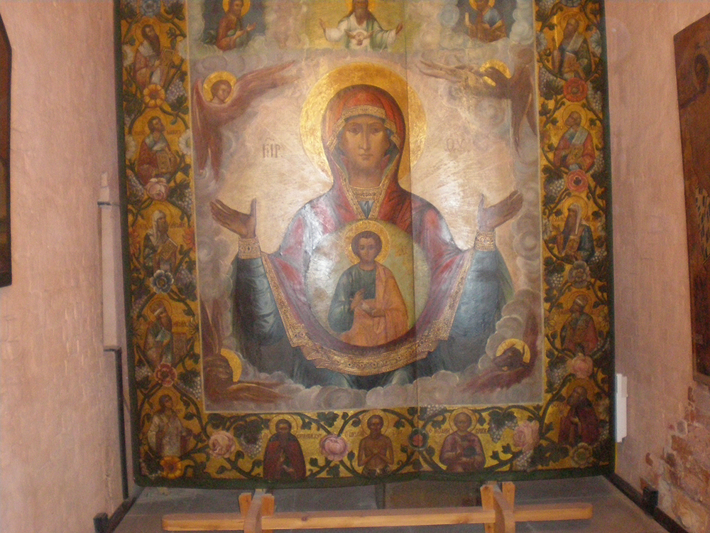
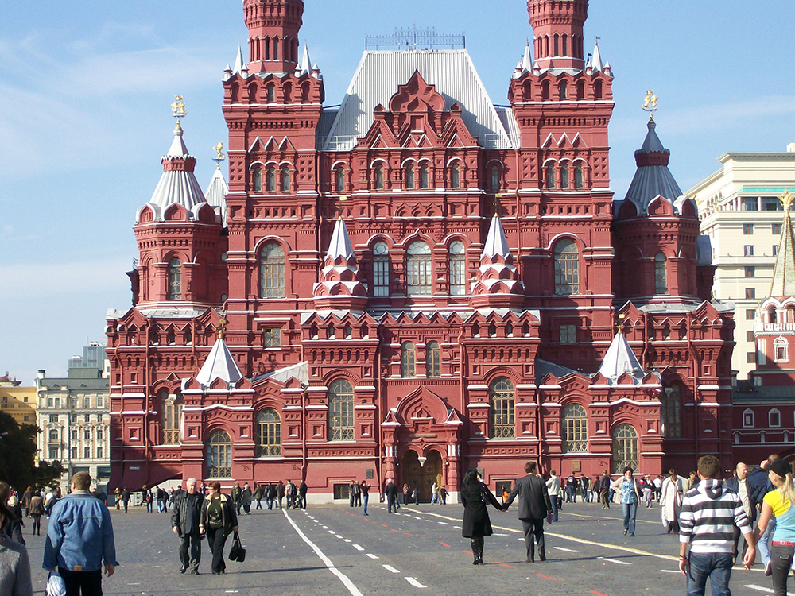
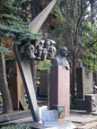

You've planned your trip, budgeted accordingly and now you're here. Congratulations, and welcome.
Here's where the fun begins. This is a list of some of the must see sights in Moscow - as well as some of my personal favorites.
You've planned your trip, budgeted accordingly and now you're here. Congratulations, and welcome.
Here's where the fun begins. This is a list of some of the must see sights in Moscow - as well as some of my personal favorites.
St. Basil's Cathedral
 The architectural symbol of Russia. St. Basil's will captivate you with its baroque architecture, kaleidoscope of richly colored fixtures, and the native uniqueness of its artwork.
The architectural symbol of Russia. St. Basil's will captivate you with its baroque architecture, kaleidoscope of richly colored fixtures, and the native uniqueness of its artwork.
Religious art in Russian cathedrals is like nothing you have witnessed before, both in its display and its presentation.
First, artists used every last inch of wall space to illustrate their praise to the Lord. Each chapel is covered in uncountable, unconnected biblical imagery spiraling from the ground to the center of the ceiling, leaving no remaining canvas. This contrasts with more the more conservative and narative (think the stations of the cross - which I don't recall seeing once in Russian cathedrals) presentions of western churches.
Additionally, a great deal of Russian religious imagery is abstract. One image of the resurrection - found in the Cathedral of Christ the Savior - shows Jesus riding a golden chariot through the clouds, carried by a winged lion and a demon, supposedly representing his ascension over evil (or so I read).
Religious figures are also drawn in an angular, animated style - much like the figures scene in Japanese cartoons. This depiction is offen referred to as "the stern face of Christ" - because of his long face - even though it is used to illustrate all characters. This sytle was first introduced through a painting in St. Basil's cathedral in the fifteenth century according to the cathedral tour.
St. Basil's is located in the Red Square Admission is 50 rubles - 75 if you want to take pictures (you do)!
Lenin's Tomb
 Admission is free. Russian tombs, much like its artwork, are very figurative, and the inside of Lenin's tomb is supposed to be a sight. Stalin was burried inside the tomb; he now rests behind the tomb of Lenin, deemed unworthy to share space with Lenin in the 1960's because of his inhuman policies during Russia's industrial expansion.
Admission is free. Russian tombs, much like its artwork, are very figurative, and the inside of Lenin's tomb is supposed to be a sight. Stalin was burried inside the tomb; he now rests behind the tomb of Lenin, deemed unworthy to share space with Lenin in the 1960's because of his inhuman policies during Russia's industrial expansion.
Unfortunately, we did not get to experience this - it is only open one day a week - a fact Lonely planet fails to mention.
The Kremlin
The epicenter of the Russian state. For 300 rubles, you get to visit a series of historic buildings, collections (the armory and diamond exchange) and cathedrals built for the early Tsars.
A note of interest: the more recent the cathedral, the larger its size. Whenever a Czar had a cathedral built in his name, he always insisted it be larger then his predecessors. Tsars were burried in their cathedrals following their death, and masses for the royal family and political cabinet would be relocated to the new Tsars cathedral.
Moscow River
 Just outside the walls of the Kremlin lies Moscow River: A stunning site, particularly at dusk.
Just outside the walls of the Kremlin lies Moscow River: A stunning site, particularly at dusk.
I highly recommend taking a boat tour, offering a look at Moscow's breathtaking natural landscapes on the outskirts of the city.
 If you're looking for a romantic setting, take a stroll across Moscow River over the walking bridge (this will take you to the south side of the city, called Zamoskvorechie, literally meaning "beyond the river"). The bridge is decorated with a series of trees ornamented with locks; it is a tradition amongst couples married in Moscow to place a lock on the tree on their wedding day, signifying their bond as a newly married couple.
If you're looking for a romantic setting, take a stroll across Moscow River over the walking bridge (this will take you to the south side of the city, called Zamoskvorechie, literally meaning "beyond the river"). The bridge is decorated with a series of trees ornamented with locks; it is a tradition amongst couples married in Moscow to place a lock on the tree on their wedding day, signifying their bond as a newly married couple.
Historic Landmark: There is a huge statue in the middle of the moscow river of an explore holding a golden map, standing on three ships stacked atop each other.
What does the statue remind you of?
If you guessed Christopher Columbus, you're right . . . sort of.
 The statue was built to resemble Christopher Columbus, standing on top of the Nina, Pinta and Santa Maria for sale to the U.S. early last decade. More than twice the size of the Statue of Liberty (not counting her base), the structure was auctioned to 13 U.S. cities. All found the structure to large to house, too expensive to purchase - and too gaudy.
The statue was built to resemble Christopher Columbus, standing on top of the Nina, Pinta and Santa Maria for sale to the U.S. early last decade. More than twice the size of the Statue of Liberty (not counting her base), the structure was auctioned to 13 U.S. cities. All found the structure to large to house, too expensive to purchase - and too gaudy.
Reject by the U.S., the sculptor - a close friend of then President Vladimir Putin - removed Columbus's head and replaced it with a sculpture of Peter the Great, the first Russian Tsar to travel outside the country.
This sparked outrage amongst the residents of Moscow - mostly because Peter the Great despised Russia's capital city. Peter the Great enacted a series of draconian laws on the people of Moscow, including a prohibition and a mandate prohibiting men to have beards. He also relocated the capital to St. Petersburg.
So enraged were Russians over the statue that several attempts were made to blow it up. The statue of Peter the Great is now protected by 24-hour armed security.
Tretyakov gallery
The most thorough collection of Russian art you will find in Moscow. While definitely worth a visit, the artwork was a bit of a let down after the vibrant and imaginative imagery experienced in Russia's cathedrals. Most of the paintings are impressionistic pieces from the pre-revolutionary era. This gallery offers a glimpse - a very gloomy one - into Russias past.
Admission is 225 rubles.
The new Tretyakov gallery (an additional 225 rubles) is just down the road and features contemporary artwork, favoring an avant-garde style. Unique and inspiring, but still not as interesting as cathedral art.
Sculpture Park
 Just behind the New Tretyakov gallery is the sculpture park. Formerly know as the Park of Fallen Heroes, it features several sculptures of soviet era images. Particularly interesting is the depiction of Stalin: his nose has been removed - to smite his face - and he is positioned before a wall of skulls, representing all those who died during his industrial expansion.
Just behind the New Tretyakov gallery is the sculpture park. Formerly know as the Park of Fallen Heroes, it features several sculptures of soviet era images. Particularly interesting is the depiction of Stalin: his nose has been removed - to smite his face - and he is positioned before a wall of skulls, representing all those who died during his industrial expansion.
Admission: 50 Rubbles
Puskin Fine Arts Museum
Russia's largest display of foreign art. Many of the works here were taken from the Germans following WWII, works the Germans appropriated from nations they conquered. There are many beautiful paintings you won't find anywhere else here - a must. Admission is 300 rubles
Novodevichy Graveyard
Not content with a rounded rectangular slab featuring a sentimental epitaph, Russian tombs are sculpted to represent a side of a person's life work through abstract imagery. Admission is 30 Rubles
Smaylovo Market
 Souvenier time - if you want to bring back indigenous goods for your family and friends - and get something for yourself too - this is the place. Essentially a flee market, it is very easy to talk vendors down in price, especially because everyone is selling the same thing.
Souvenier time - if you want to bring back indigenous goods for your family and friends - and get something for yourself too - this is the place. Essentially a flee market, it is very easy to talk vendors down in price, especially because everyone is selling the same thing.